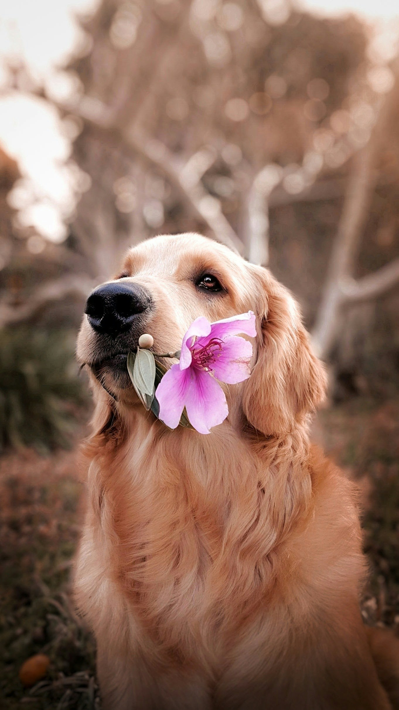
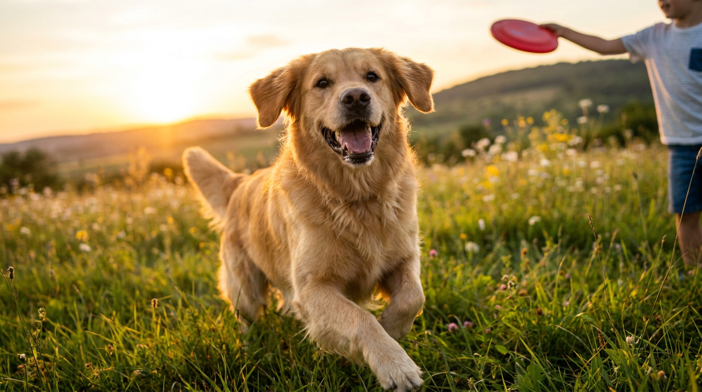
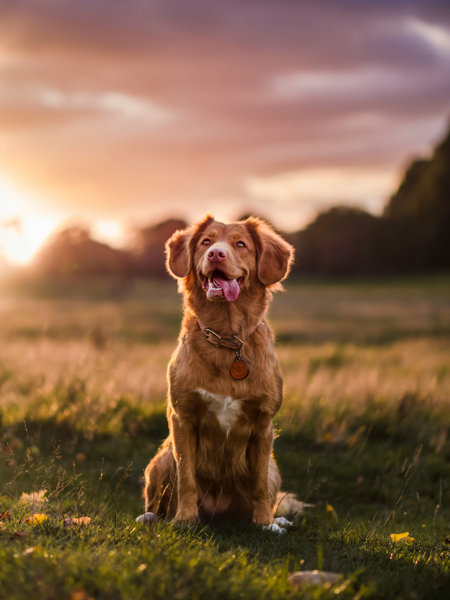
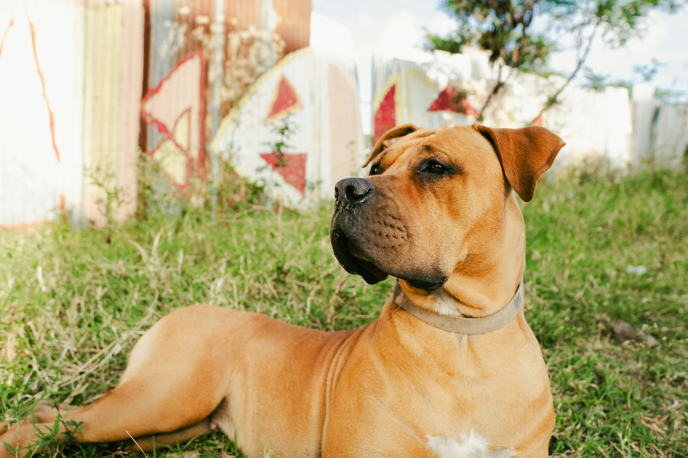
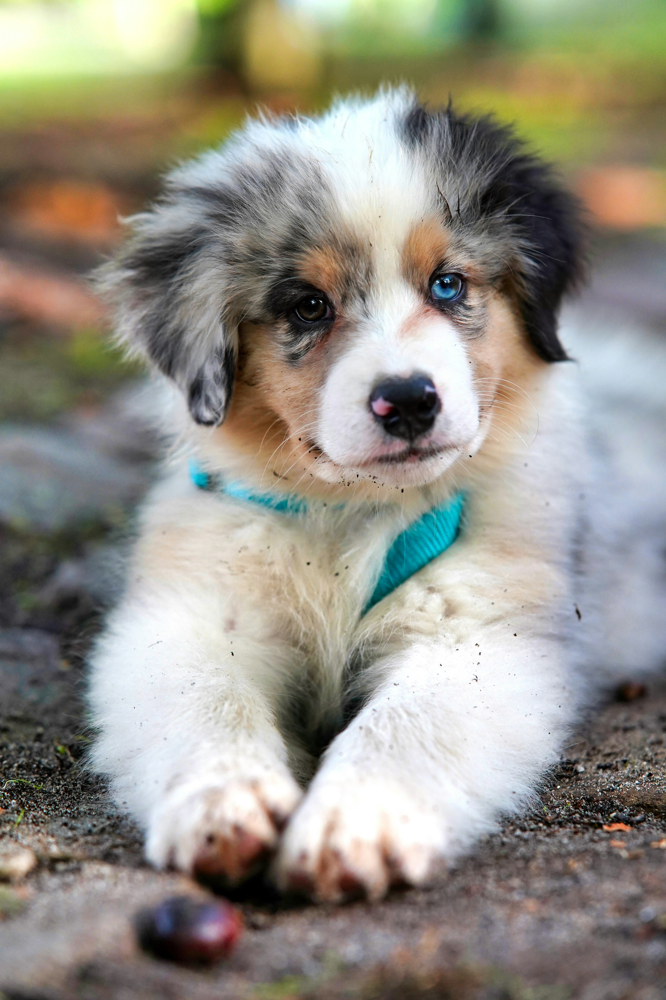
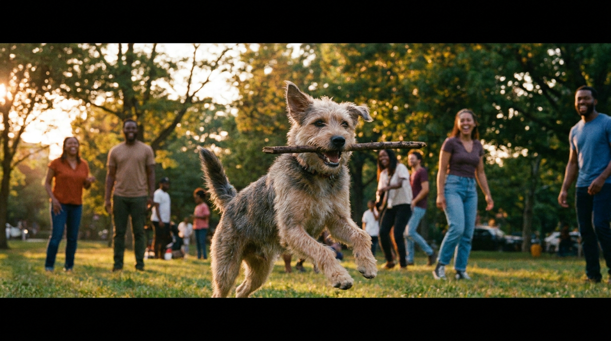
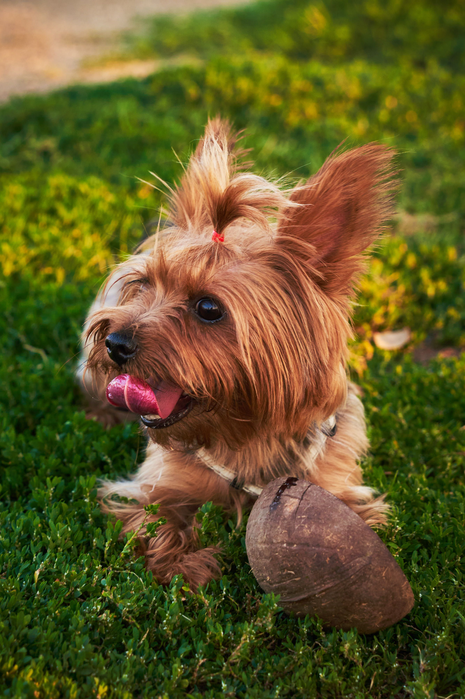
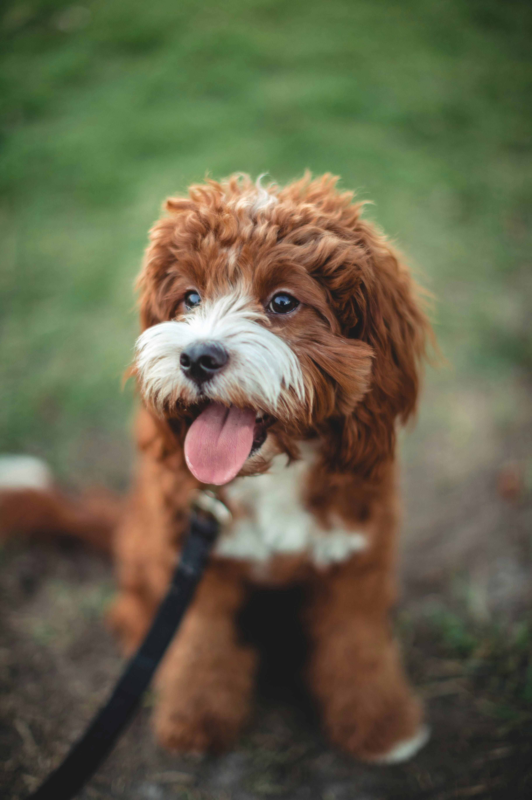

Nala
Nala loves belly rubs and gets along well with other dogs. She'd thrive in a home with a garden to explore.
Adopt MeAdoption
All dogs in our care are sterilised, vaccinated, and microchipped before adoption. Browse a few of the dogs currently waiting for their forever homes below, and get in touch via our enquiry form if you'd like to meet one of them.

Nala loves belly rubs and gets along well with other dogs. She'd thrive in a home with a garden to explore.
Adopt Me


Stryker has been through a difficult time and is looking for a foster or forever home where he can learn to trust again.
Adopt Me
Rocky is a big softie once he gets to know you. He's well-behaved on a leash and would suit an experienced dog owner.
Adopt Me
Coco is still learning about the world and would benefit from a home ready to help with basic training.
Adopt MeA few of our recent success stories.

Adopted in March — now living his best life on a farm in Muldersdrift.

Found her forever family in Fourways after 8 months in foster care.

Adopted by a Midrand family — he now has two kids and a garden to play in.